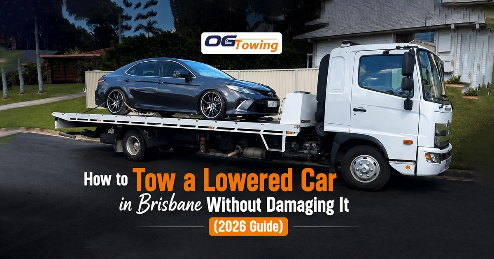

Anyone who has lowered their car knows the sound — that scrape of the front bar dragging over a driveway lip or a speed hump. Now imagine that same car being winched onto a standard tow truck at a 25-degree angle, at night, by a driver who has never handled a low-clearance vehicle. That is how splitters get torn off, sills get crushed and $3,000 body kits end up in the boot. If you drive a lowered, slammed or sports vehicle anywhere in Brisbane, OG Towing is the Capalaba team that gets it onto the tray without a mark on it.
Broken down in a lowered car? Call OG Towing on 0430 917 742 for 24/7 low-clearance towing across Brisbane and the Redlands. Flat-rate pricing Affordable and a free, no-obligation quote before we roll.
Why lowered car towing matters in Brisbane in 2026
Brisbane’s modified-car scene is one of the largest in the country, and the roads are not built for it. A few things worth knowing before you call anyone:
- Queensland allows a vehicle to be lowered as long as it maintains a minimum running clearance of 100mm — which leaves very little room between your underbody and a standard tow ramp.
- Most general towing fleets run wheel-lift or hook-style trucks, which lift one end of the car and drag the other. On a lowered vehicle, the trailing end scrapes.
- Brisbane’s speed humps, kerb ramps and steep suburban driveways in areas like Carindale, Mount Gravatt and Cleveland are common damage points during pick-up, not just during driving.
- Insurance disputes over towing damage are slow and painful. Preventing the damage is far cheaper than arguing about who caused it.
- After-hours breakdowns are when most mistakes happen — a rushed operator with the wrong gear at 1am is the worst combination for a low car.
What counts as a “low clearance” vehicle?
You do not need a show car to be in this category. Our lower car towing service regularly handles:
- Coilover or lowering-spring modified vehicles (Golf GTI, WRX, Civic Type R, Commodore, Mustang)
- Factory-low sports and performance cars (Porsche, BMW M-series, Supra, MX-5)
- Vehicles fitted with front splitters, side skirts or aggressive body kits
- Air-suspension cars sitting on the bags after an electrical or compressor failure
- Long-wheelbase luxury sedans and EVs with low-hanging battery trays
- Cars with damaged suspension after an accident, sitting far lower than designed
If the gap between your front lip and a flat driveway is roughly the width of your hand or less, treat it as a low-clearance tow.
Why a standard tow truck damages a lowered car
The problem is geometry. A conventional tilt tray drops its deck at an angle of around 15 to 20 degrees. A lowered car with a long front overhang cannot climb that angle without the bumper, splitter or exhaust making contact first. Three specific failure points:
- Approach angle: The front lip touches the ramp before the tyres do, so as the winch pulls, the car pivots on the bumper instead of rolling up.
- Break-over angle: Halfway up the ramp, the car’s midpoint sits over the ramp edge and the sills or side skirts take the load. This is what cracks skirts and bends jacking points.
- Departure angle: Coming off the tray, the rear bar and exhaust tips make contact on the way down — often after the customer has already relaxed.
A driver who does not think about all three will get the car on the truck and still hand it back damaged.
The right way to load a lowered car
Professional low-clearance recovery is a method, not just a truck. Here is what a proper pick-up looks like:
- Confirm clearance on the phone. We ask about ride height, body kit and suspension type before dispatch so the right truck is sent the first time.
- Choose the loading surface. A flat stretch of road beats a cambered driveway. Sometimes we reposition the truck twice to find the flattest approach.
- Use low-angle ramp extensions. Extra ramp sections reduce the approach angle dramatically, letting the car climb without the lip touching down.
- Winch slowly and steadily. Speed is the enemy. A controlled winch pull gives the driver time to stop if anything makes contact.
- Use timber or rubber wedges where needed. Placed under the ramp edge, these smooth the break-over point.
- Strap through the wheels, not the chassis. Wheel-basket or over-tyre straps avoid crushing sills and pinch welds.
- Photograph before and after. A quick condition record protects both you and us.
Tilt tray vs other towing methods for low cars
| Method | How it works | Safe for a lowered car? |
|---|---|---|
| Tilt tray / flatbed | Entire vehicle sits on a hydraulic deck, all four wheels off the road | Yes — the only recommended method, especially with ramp extensions |
| Wheel-lift | Front or rear wheels lifted, other end rolls on the road | Risky — the trailing bumper and exhaust sit low and can scrape |
| Dolly tow | Two wheels placed on a small trailer | Risky — raises one end and changes the car’s rake |
| Hook and chain | Chains attached to the chassis or axle | No — outdated and likely to damage the underbody and paint |
For anything lowered, modified or high-value, a tilt tray with a shallow loading angle is the answer every time. It is the same equipment we use for emergency towing after a breakdown or collision.
What does lowered car towing cost in Brisbane?
Low-clearance work sits at the tilt-tray end of the pricing scale because it needs the right truck and more time on site. Typical Brisbane ranges:
| Job type | Typical cost |
|---|---|
| Local tow, 0–10km (Capalaba, Cleveland, Carindale) | $90 – $150 |
| Per-kilometre rate beyond the base distance | $3 – $6 per km |
| Tilt tray / low-clearance per km | $5 – $8 per km |
| After-hours, weekend or public holiday | Surcharge may apply |
OG Towing starts Affordable for local light-vehicle tows, with the final figure depending on distance and vehicle type — quoted upfront, before the truck is dispatched. For a fuller breakdown of how towing is priced across the region, see our guide to towing costs in Brisbane.
Queensland rules worth knowing
Lowering a car in Queensland is legal within limits. Under the state’s vehicle standards, a light vehicle generally needs to maintain a minimum running clearance of 100mm between the ground and any point on the underside, excluding tyres, wheels, hubs, brake backing plates and mudflaps. Modifications beyond the basic category may require certification by an approved person. The Department of Transport and Main Roads publishes the full requirements on its vehicle modifications page.
Two practical implications for towing:
- If your car sits below the legal limit, an operator may need to load it on private property rather than winch it off a public road.
- If your car has been defected, a tilt tray tow is usually the only compliant way to move it to a workshop.
What to tell the operator when you call
Give the dispatcher these five details and you will get the right truck first time:
- Ride height — how much clearance you have at the front lip
- Suspension type — coilovers, springs or air (and whether the bags have dropped)
- Body kit — splitter, skirts, diffuser
- Location — flat road, sloped driveway, underground car park, motorway shoulder
- Steering capability — whether it rolls and steers (a locked steering column changes the whole approach)
That last point matters more than people expect. A car that will not roll needs skates or a heavier winch setup, and it is far better to know that before the truck leaves the depot.
Why choose OG Towing for low-clearance towing
- 16 years and 1,500+ completed jobs across Brisbane, Capalaba and the Redlands
- Tilt tray fleet with low-angle ramp extensions — the correct gear for lowered and modified vehicles
- 30-minute target response across Brisbane and Redlands suburbs
- Transparent, flat-rate pricing Affordable with no hidden call-out surprises
- 24/7 availability, including nights, weekends and public holidays
- Wheel-strap tie-downs as standard — we never chain a modified car by the chassis
- Local operators who know the driveways, car parks and speed humps around Capalaba and the eastern suburbs
We handle everything from routine car towing to accident recovery and workshop transport, and low-clearance vehicles are a genuine specialty rather than an afterthought.
Final word
A lowered car is not harder to tow — it is just unforgiving of the wrong method. The scrapes, cracked skirts and torn splitters that owners blame on bad luck are almost always the result of the wrong truck or a rushed loading angle. Ask the right questions when you call, insist on a tilt tray, and make sure the operator has actually handled a low car before.
Stuck in a lowered car anywhere in Brisbane, Capalaba or the Redlands? Call OG Towing on 0430 917 742, 24 hours a day. Upfront quote, the right truck, and your car delivered exactly as it left.
FAQs
Usually yes, but only if the operator uses ramp extensions or wedges to reduce the loading angle. A standard tilt tray deck drops at roughly 15 to 20 degrees, which is enough to catch a front splitter. Ask the towing company directly whether they carry low-angle ramps before you book. If they cannot answer, call someone who can — the difference is a scratch-free load versus a damaged bumper.
It can be slightly higher than a standard tow because the job requires a tilt tray and more time on site. Tilt tray rates in Brisbane typically run around $5 to $8 per kilometre compared with $3 to $6 for standard towing. OG Towing quotes a flat rate upfront, starting Affordable for local light-vehicle tows, so you know the cost before the truck is dispatched.
This is common and completely manageable. Tell the dispatcher when you call so the driver brings ramp extensions and, if needed, skates. In some cases the car can be raised manually or with air from the truck’s compressor to gain enough clearance. Never try to drive it onto a ramp yourself while it is bagged out.
Yes. A tilt tray tow is generally the compliant way to move a defective vehicle to a workshop or to your home, since the car is not being driven on the road. Keep any defect notice paperwork with you, and let us know the destination when you book so the job is planned properly.
Yes. OG Towing operates 24 hours a day, seven days a week, including weekends and public holidays, across Brisbane, Capalaba, the Redlands, Logan and the major motorways. Call 0430 917 742 at any hour and let the dispatcher know it is a low-clearance vehicle so the correct truck is sent straight away.